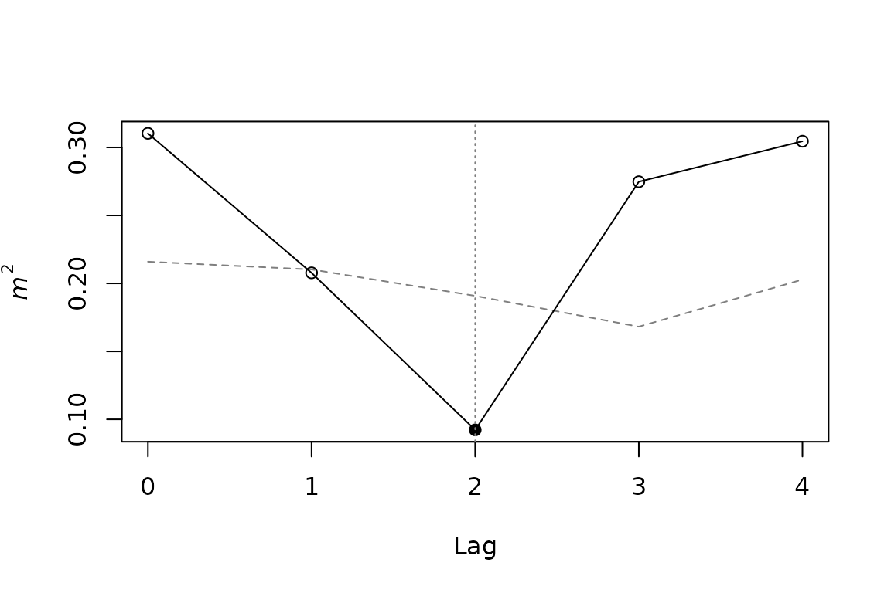

The question
PROTEST (Jackson 1995; Peres-Neto and Jackson 2001) measures how well two multivariate configurations of the same observations match after Procrustes superimposition, and tests that match by permutation. When the observations are ordered time points, for example monthly means of a set of environmental variables and of a set of phenotypic traits, concordance may be strongest not between contemporaneous rows but after a delay: the response may track its driver with a lag of k time units.
lagged_protest() asks at which lag the two series match
best. For each candidate lag k, row t of
X is paired with row t + k of Y, the
series are truncated to their n - k overlapping rows, and
the symmetric Procrustes statistic m² is computed. Lower
m² means stronger concordance. Each lag is tested by
permutation, and the lag with the smallest m² is reported
together with the full lag profile.
Input data
Both inputs have one row per time point, in temporal order, and the
same number of rows. Columns are variables and need not be the same in
number or kind. X is the configuration expected to lead
(the driver); Y the one expected to follow. Inputs can be
matrices, data frames or dist objects; dissimilarities are
converted to principal coordinates, so any dissimilarity measure suited
to the data can be used upstream.
Here we simulate a 12-month series of five variables (X)
and a response (Y) that follows X with a lag
of two months:
sim <- simulate_lagged_series(n_times = 12, true_lag = 2, autocorr = 0.5,
noise_sd = 0.5, seed = 1)
dim(sim$X)
#> [1] 12 5
dim(sim$Y)
#> [1] 12 5simulate_lagged_series() builds seasonal sinusoids plus
AR(1) noise. With true_lag = NULL it returns two
independent series, which is useful for checking Type I error.
Running the test
fit <- lagged_protest(sim$X, sim$Y, lags = 0:4, nperm = 999, seed = 1)
fit
#>
#> Lagged PROTEST
#>
#> Call: lagged_protest(X = sim$X, Y = sim$Y, lags = 0:4, nperm = 999, seed = 1)
#> Permutation: phase-randomized surrogates; n = 12 time points
#> P-value adjustment across lags: none
#>
#> Optimal lag: 2 (m2 = 0.0922, r = 0.953, p = 0.001)
#> Global p across lags (max-statistic): 0.003
#>
#> Lag profile:
#> lag n m2 r p.value nperm
#> 0 12 0.3103 0.830 0.962 999
#> 1 11 0.2078 0.890 0.138 999
#> 2 10 0.0922 0.953 0.001 999
#> 3 9 0.2748 0.852 0.818 999
#> 4 8 0.3046 0.834 0.876 999
#> Per-lag p-values are not corrected for testing several lags or for selecting
#> the optimal lag; report the global p for the optimal lag.By default the null distribution comes from phase-randomized
surrogates of Y (see Choosing the permutation
scheme); seed makes the result reproducible. The
profile lists, for every lag, the number of rows used (n),
m², the Procrustes correlation r = √(1 − m²),
the permutation p-value and the number of surrogates. The optimal lag
here is the true one, 2.
The per-lag p-values are not corrected for testing several lags, nor
for choosing the lag with the smallest m² after looking at the
profile. Reporting the raw p-value at the optimal lag therefore inflates
Type I error to roughly the rate at which any lag is
significant. The p-value to report for the optimal lag is the global
p-value, printed below the optimal lag and stored in
fit$p.global. It compares the observed minimum m²
across lags with the minimum across lags obtained under each permutation
(a max-statistic test), so it is the p-value of the whole
scan-and-select procedure:
fit$p.global
#> [1] 0.003Per-lag p-values can also be corrected.
p.adjust.method = "maxT" gives the single-step
max-statistic adjusted p-value of every lag, whose value at the optimal
lag equals the global p-value; any method of
stats::p.adjust() can be used instead, and raw and adjusted
values are then both reported:
fit_holm <- lagged_protest(sim$X, sim$Y, lags = 0:4, permutation = "cyclic",
p.adjust.method = "holm")
fit_holm$profile[, c("lag", "p.value", "p.adjusted")]
#> lag p.value p.adjusted
#> 1 0 0.95652174 1.0000000
#> 2 1 0.08695652 0.3478261
#> 3 2 0.04347826 0.2173913
#> 4 3 0.73913043 1.0000000
#> 5 4 0.91304348 1.0000000With the cyclic scheme and n = 12 there are only 22
permutations, so a raw p-value at its minimum of 0.043 becomes 0.217
after Holm correction across five lags, and significance at α = 0.05 is
unattainable (see Caveats).
summary() returns the profile as a data frame, with the
optimal lag flagged:
summary(fit)
#> lag n m2 r p.value p.adjusted nperm optimal
#> 1 0 12 0.31032769 0.8304651 0.962 0.962 999 FALSE
#> 2 1 11 0.20776926 0.8900734 0.138 0.138 999 FALSE
#> 3 2 10 0.09221418 0.9527779 0.001 0.001 999 TRUE
#> 4 3 9 0.27479436 0.8515901 0.818 0.818 999 FALSE
#> 5 4 8 0.30456477 0.8339276 0.876 0.876 999 FALSEPlotting the lag profile
plot(fit)
The solid line is the observed m² at each lag. The dashed line is the 5% quantile of the permutation null distribution at that lag: observed values below it are significant at α = 0.05 before correction. Filled points mark lags with p < 0.05 (after adjustment, if one was requested), and the dotted vertical line marks the optimal lag.
Residuals per observation
Procrustes residuals show which time points fit the superimposition well and which deviate, at the optimal lag:
residuals(fit)
#> x_row y_row residual
#> 1 1 3 0.09796321
#> 2 2 4 0.11137958
#> 3 3 5 0.05870125
#> 4 4 6 0.09649460
#> 5 5 7 0.07735381
#> 6 6 8 0.06387173
#> 7 7 9 0.13230232
#> 8 8 10 0.09243341
#> 9 9 11 0.10137702
#> 10 10 12 0.10519784Each row pairs a time point of X (x_row)
with the time point of Y it is matched to
(y_row). Row names of the inputs, such as month labels, are
carried through.
Choosing the permutation scheme
Standard PROTEST permutes rows freely, which assumes that time points are exchangeable under the null hypothesis. Seasonal or otherwise autocorrelated series are not: two independent series that both cycle annually will often look concordant against a null that destroys their temporal structure, a problem shared with other permutation tests on autocorrelated data (Legendre et al. 2002).
lagged_protest() offers two schemes that keep the
temporal structure of Y:
-
permutation = "phase"(default) drawsnpermphase-randomized surrogates ofY(Ebisuzaki 1997). Each surrogate keeps the amplitude spectrum of every column ofY, and hence its autocorrelation, as well as the cross-spectra among the columns, but receives new Fourier phases. -
permutation = "cyclic"shifts the fullYseries cyclically by 1, …, n − 1 positions, and also time-reverses it whenmirror = TRUE, before the lag is applied. Each permuted series keeps its autocorrelation. All shifts are enumerated, so the test needs no random seed.
permutation = "free" reproduces the behavior of
vegan::protest() (Oksanen et al. 2026).
The cyclic and phase schemes differ in how they handle the scan
across lags. Shifting Y by s positions and then
applying lag k pairs the same rows as lag k +
s without a shift. When several lags are scanned, some cyclic
permutations therefore reproduce the observed alignment at another lag,
and the null distribution of the minimum m² across lags
contains the signal itself. The per-lag p-values are unaffected, but the
global p-value loses power. Phase surrogates are new series rather than
shifts of the observed one, so they avoid this problem; they also allow
as many surrogates as desired, instead of the 2(n − 1)
cyclic permutations.
The choice matters. Under independence, a small simulation with 24
monthly samples spanning one cycle gives the following rejection rates
at α = 0.05: for the raw p-value at the optimal lag, and for the global
p-value under each scheme. A second set of series, in which
Y follows X with a lag of two, gives the power
of the global p-value:
rates <- function(true_lag, n_rep) {
res <- vapply(seq_len(n_rep), function(i) {
s <- simulate_lagged_series(n_times = 24, period = 24, true_lag = true_lag,
autocorr = 0.5, noise_sd = 0.5, seed = i)
cyc <- lagged_protest(s$X, s$Y, lags = 0:4, permutation = "cyclic")
pha <- lagged_protest(s$X, s$Y, lags = 0:4, permutation = "phase",
nperm = 99, seed = i)
fre <- lagged_protest(s$X, s$Y, lags = 0:4, permutation = "free",
nperm = 99, seed = i)
c(cyclic_optimal_raw = cyc$p.value, cyclic_global = cyc$p.global,
phase_global = pha$p.global, free_global = fre$p.global)
}, numeric(4))
rowMeans(res < 0.05)
}
rbind(type_I = rates(NULL, 100), power = rates(2, 100))
#> cyclic_optimal_raw cyclic_global phase_global free_global
#> type_I 0.1 0.03 0.03 1
#> power 1.0 0.54 1.00 1The raw p-value at the optimal lag is too liberal and free permutation rejects almost always. Both global p-values keep Type I error near the nominal level, but only the phase scheme retains power.
Caveats
-
Complete cycles and shared periodicity. Both the
cyclic and the phase schemes treat the series as periodic with period
n. This is appropriate when the series spans whole cycles, such as 12 monthly samples of an annual cycle. Cyclic-shift null models can be biased when this does not hold (Kalyuzhny 2020). In simulations with this package, two independent seasonal series whose period differed from the series length were declared concordant far more often than α under either scheme: series with the same period trace the same trajectory shape, which Procrustes rotation can superimpose whatever the phase difference. Concordance should then be read as possibly arising from shared seasonality alone; removing the seasonal component before the analysis is one way to test for concordance beyond it. - Strong autocorrelation. In simulations with 1000 replicates per scenario, the global p-value of the phase scheme kept Type I error at 0.047–0.053 for AR(1) autocorrelation up to 0.5, but reached 0.063 at 0.7 and 0.129 at 0.9 (averaged over series length and number of variables), and 0.15–0.19 with 12–24 time points or 10 variables. The excess faded with longer series (0.063 at AR(1) = 0.9 with 96 time points). The cyclic scheme without mirror was less affected (0.081 at 0.9) but had much lower power. For short, strongly autocorrelated series, report the cyclic result alongside the phase one, and estimate the autocorrelation of the series.
-
Few permutations. With
ntime points there are only2(n − 1)cyclic permutations, so the smallest attainable p-value is1 / (2(n − 1) + 1), 0.043 forn = 12. Corrections across many lags may then be unattainable at α = 0.05. The phase scheme has no such floor. -
Different window sizes. m² at lag
k is based on
n − krows, so long lags rest on fewer observations. Keep the candidate lags within a range justified by the biology of the system. -
Scaling. With
scale = TRUE(default) variables are standardized on the full series before truncation.